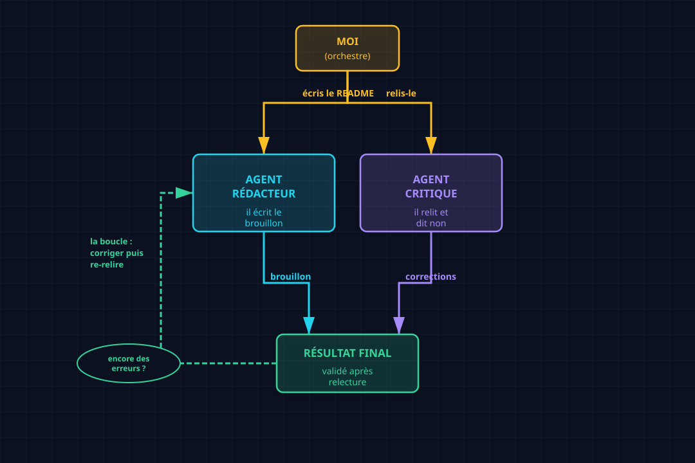

Multi-agents : quand un agent ne suffit plus¶
Un agent tout seul fait le boulot, mais le fait seul. Il n'a personne pour lui dire qu'il se trompe. Cet article montre ce qui change quand on en met deux — et pourquoi c'est souvent la différence entre « ça marche à peu près » et « c'est bon pour de vrai ».
Le concept¶
Souviens-toi de l'article 001 : un agent = une boucle + des outils + de la mémoire, lancé vers un objectif. Le multi-agents, ce n'est rien d'autre que plusieurs boucles comme ça, qui se passent le relais.
Pourquoi en vouloir plusieurs ? Un agent a un défaut de naissance : il s'auto-valide. Il écrit, il se relit, et il a tendance à trouver que tout va bien. C'est le biais du rédacteur qui signe sans se relire — pas par paresse, mais parce qu'il ne voit plus ses propres erreurs.
La parade la plus simple, c'est de séparer les rôles :
| Rôle | Ce qu'il fait |
|---|---|
| Le producteur | il écrit, il fabrique, il avance |
| Le critique | il relit, il cherche la faille, il dit non |
C'est le pattern 2-stage (produire → critiquer), la brique la plus basique du multi-agents. On n'ajoute pas d'autre modèle, pas d'autre infra : on lance juste deux agents avec deux missions différentes, et on orchestre la passation entre les deux.
Use case : un README écrit à deux¶
Le cas est tout petit, et c'est fait exprès : écrire le README d'un repo. N'importe quelle IA le fait en dix secondes, alors pourquoi deux agents ?
Parce que l'enjeu n'est pas README, c'est README sans erreur. Et c'est là qu'un seul
agent se manque : il écrit « sur main » sans se rendre compte qu'il manque une étape,
il laisse une faute de grammaire, il oublie un lien.
Donc on monte ça :
- Agent rédacteur : écris le README.
- Agent critique : relis-le, et trouve tout ce qui cloche.
- Moi, entre les deux : je fais le relais.
Architecture¶

Trois acteurs, un seul flux. L'orchestrateur (moi, ou du code) donne la tâche au rédacteur, récupère le résultat, le tend au critique, et c'est le critique qui décide si on s'arrête ou si on revient corriger. Le point clé : le rédacteur ne voit jamais son propre travail comme fini tant que le critique n'a pas tranché.
Le code¶
Le montage se fait avec delegate_task, qui lance un agent dans un contexte isolé (il ne
voit que ce qu'on lui donne, pas notre conversation). Voici l'appel au rédacteur :
delegate_task(tasks=[{
"context": "Tu es un rédacteur technique. Écris le README de ce repo. "
"Ton : direct, un peu fun, pas d'écriture IA, pas d'emoji.",
"goal": "Écrire /chemin/README.md ...",
"output_schema": {
"type": "object",
"properties": {
"file_path": {"type": "string"},
"summary": {"type": "string"},
},
},
}])
Et l'appel au critique, dans un contexte séparé — c'est le point crucial : il ne sait rien de ce qu'a fait le rédacteur, il ne lit que le résultat :
delegate_task(tasks=[{
"context": "Tu es un relecteur exigeant. Relis /chemin/README.md "
"et trouve tout ce qui cloche.",
"goal": "Relire le README et donner un verdict + la liste des problèmes.",
"output_schema": {
"type": "object",
"properties": {
"verdict": {"type": "string"},
"issues": {"type": "string"},
},
},
}])
Ce qu'il faut voir :
delegate_task= l'outil qui fabrique un agent. Chaque appel, c'est une nouvelle boucle du 001, avec son objectif à elle.- Le contexte est cloisonné — le critique ne reçoit pas l'historique du rédacteur, juste le fichier à relire. C'est ce qui l'empêche d'être contaminé par l'optimisme du rédacteur.
output_schema= on force une réponse structurée. L'orchestrateur (moi) sait exactement quoi lire à la sortie :verdict+issues.
Résultats¶
Voilà ce que ça a donné, sur un vrai repo :
[rédacteur] README écrit (~25 lignes) :
« Je fabrique des agents IA, je les regarde se casser la figure,
et je note ce que j'apprends. »
[critique] verdict : À CORRIGER
1. « titre-du-article » → faute : « du » devant une voyelle.
2. il manque une étape : ajouter le lien dans le tableau de index.md.
Deux erreurs trouvées. La première est une coquille que le rédacteur n'avait pas vue. La seconde est plus profonde : c'est une étape manquante dans la procédure, pas une faute de frappe — le genre de chose qui ne se voit qu'avec un regard neuf.
Et c'est exactement le gain du multi-agents : le critique a attrapé ce que le rédacteur, en s'auto-relisant, était structurellement incapable de voir. Pas parce que le critique est plus malin — il tourne sur le même type de modèle — mais parce qu'il arrive froid, sans l'historique de ce qui vient d'être écrit.
Ce qu'il faut retenir¶
Multi-agents = plusieurs boucles qui se passent le relais, avec des rôles séparés.
Le pattern le plus simple, et déjà le plus rentable, c'est produire → critiquer. Un agent avance, un autre dit non. Ça ne demande rien de plus que deux appels et une coordination — mais ça transforme « un agent qui se fait confiance » en « deux agents qui se vérifient ».
Et au passage, c'est la porte d'entrée vers tout le reste : les essaims, le farming, l'orchestration complexe — tout ça, c'est la même brique, répétée et câblée différemment.